MonoPulse Visual Demo Script
A screenshot-backed walkthrough for product owner, design, backend and stakeholder review. Each screen uses a local capture from the MonoPulse prototype.
1. Access And Role Scope
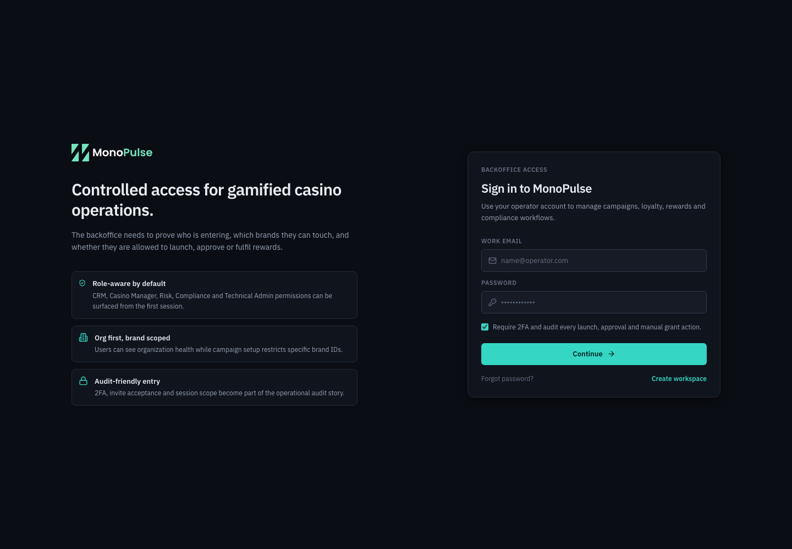
The backoffice starts with controlled access. Every operator enters with a role, organization and brand scope.
Questions
- Which roles can access day one?
- Is 2FA mandatory for all operators?
- Can one user belong to multiple organizations?
2. Operations Dashboard
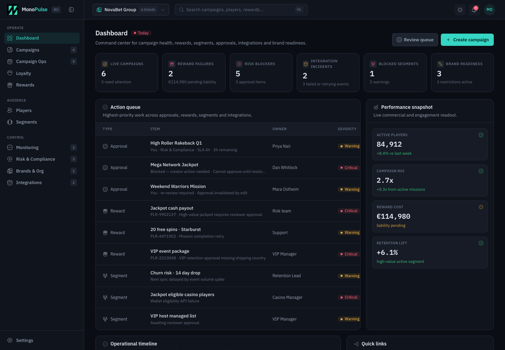
This is the operator's morning view: live campaigns, blockers, approvals, risk and cost movement.
Questions
- Which dashboard metrics are mandatory?
- Should blockers appear before revenue?
- Which actions should be available directly here?
3. Campaign Ops
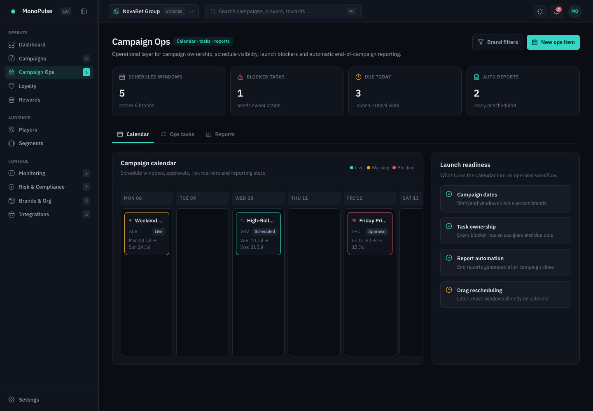
Campaign Ops adds the operational layer the product owner asked for: calendar visibility, Jira-like task ownership, and configurable automatic reporting after campaign end.
Questions
- Should MonoPulse own tasks fully or sync with Jira/Linear?
- Which campaign milestones must appear on the calendar?
- Which report sections are mandatory after every campaign?
4. Campaign Portfolio
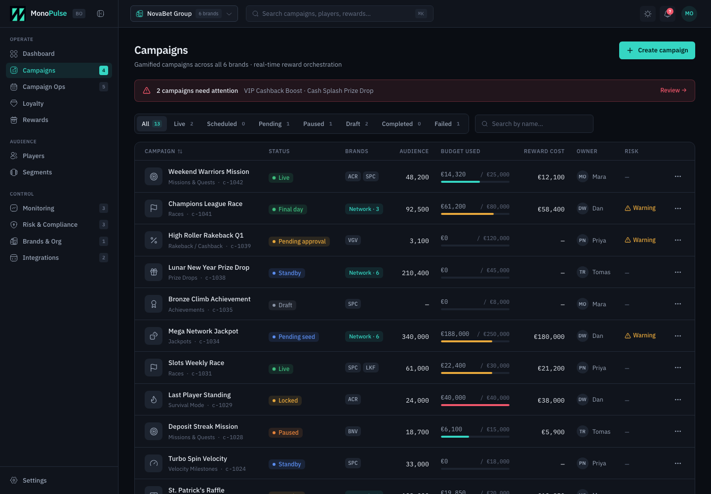
Campaign managers need to compare mechanic, lifecycle, audience, budget, reward cost and risk in one scanning surface.
Questions
- What are the final campaign states?
- Should campaigns group by brand, mechanic, owner or lifecycle?
- Which columns differ for CRM versus Casino Manager?
5. Campaign Detail
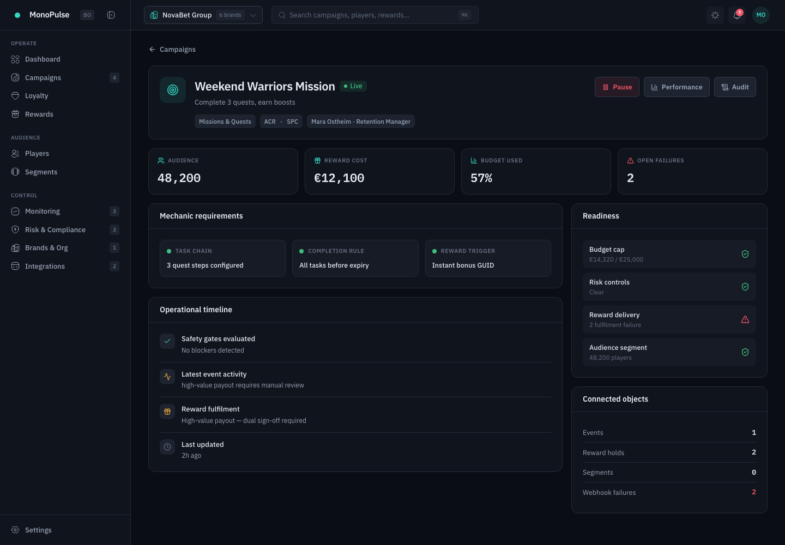
This view should answer whether the campaign is healthy, who it targets, what it costs, what it rewards and what blocks launch.
Questions
- Which edits require re-approval?
- Should pausing require a reason note?
- What audit trail is required?
6. Campaign Creation
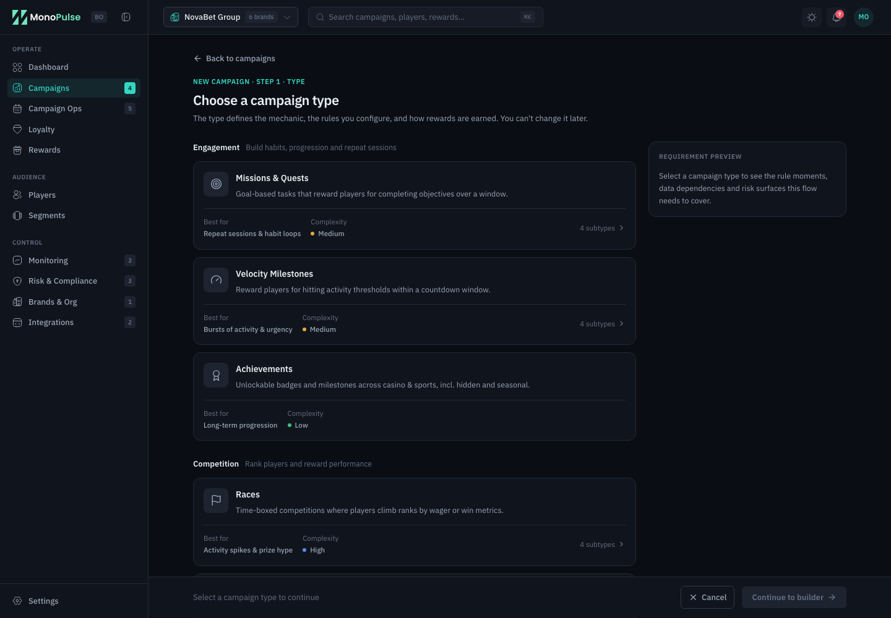
The first builder decision is mechanic type. The product owner wants all major campaign types available for prototype testing.
Questions
- Which mechanics are launch-critical?
- Which require backend support not yet confirmed?
- Are there jurisdiction limits by type?
7. Campaign Review
Review is where setup, audience, reward, budget and compliance are checked before submission.
Questions
- Which checks are hard blockers?
- Which checks are warnings?
- Who can submit, approve and launch?
8. Approval Inbox
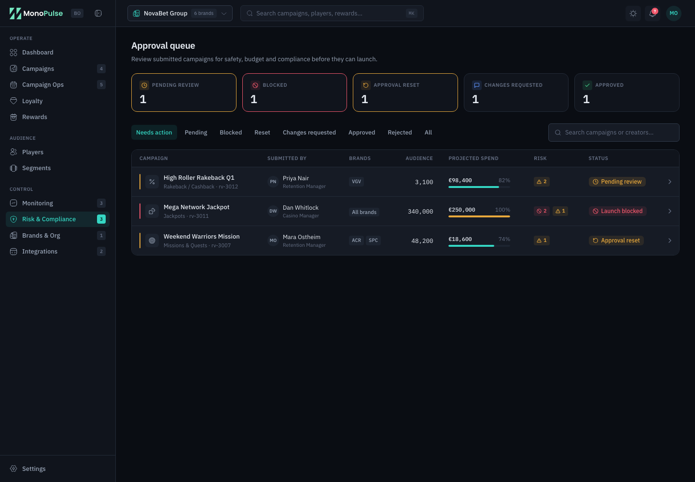
Approvals are the control layer that makes campaigns, rewards and sensitive player actions license-ready.
Questions
- Which workflows require approval?
- Can approvals be delegated?
- Is approval one-step or multi-step?
9. Reward Catalog
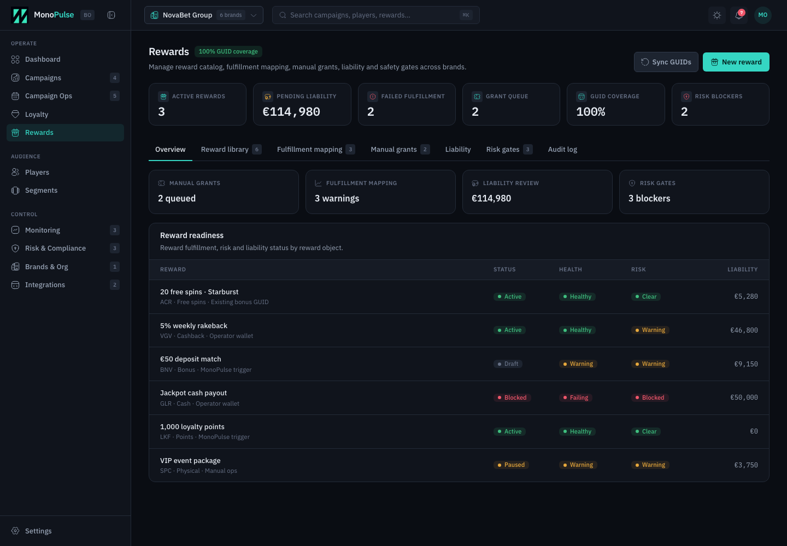
Rewards connect product, finance, integration and risk. The catalog needs fulfillment mode, GUID coverage, health and liability.
Questions
- Which fulfillment modes are launch scope?
- Who owns failed reward recovery?
- Should liability block launch automatically?
10. Reward Detail
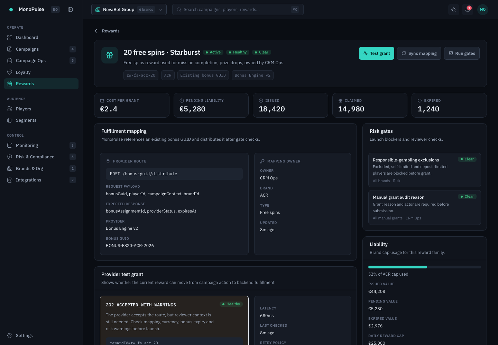
This is the backend-sensitive view: fulfillment route, provider contract, test grant, risk gates, audit and reconciliation.
Questions
- What is the bonus GUID lookup response?
- What happens when operator fulfillment fails?
- Do retries need manual approval?
11. Player Profile
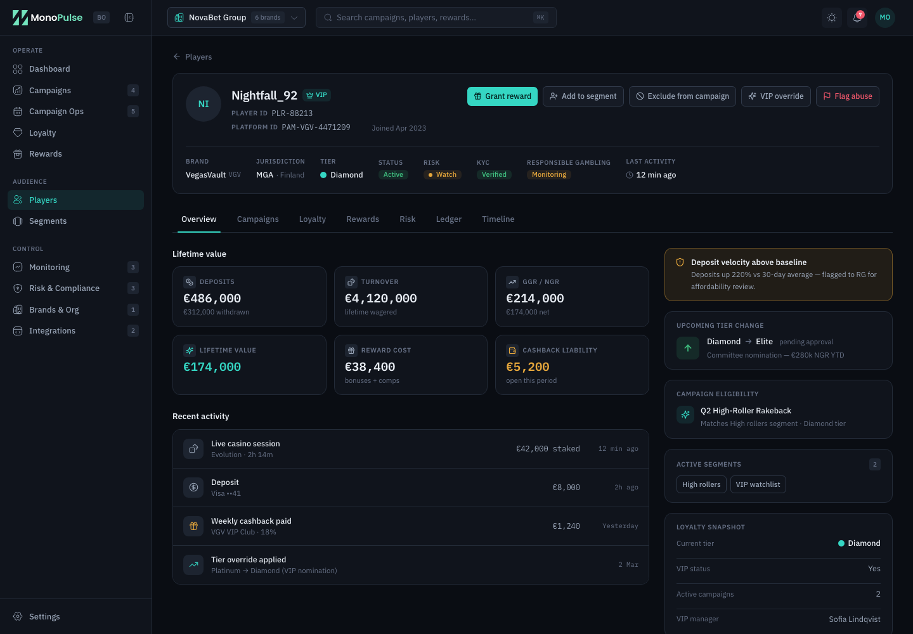
CRM needs player context, but player actions are sensitive. Value, loyalty, campaigns, rewards and risk need permission boundaries.
Questions
- Which player fields can CRM see?
- Which actions require Risk permission?
- Which actions require reason notes?
12. Segments
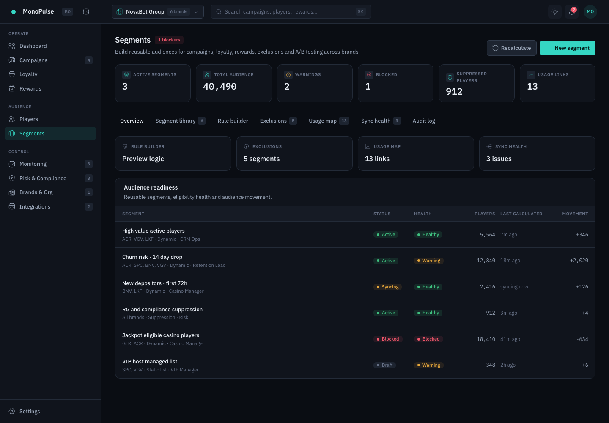
Segments power campaigns, loyalty, rewards, exclusions and A/B testing. They need reusable rules and auditability.
Questions
- Do segments require independent approval?
- Are segments global, brand-specific or campaign-specific?
- What is the refresh cadence?
13. Monitoring
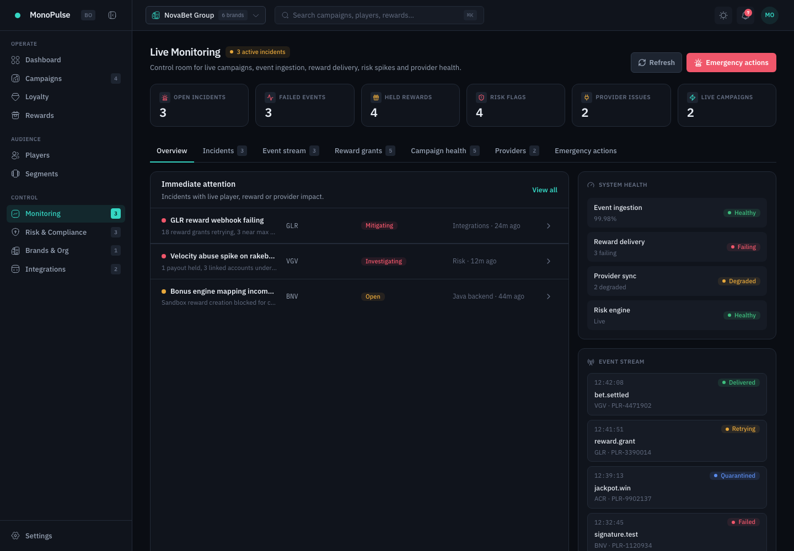
Monitoring is where real-time becomes operational: failed events, provider degradation, campaign health and emergency actions.
Questions
- Which incidents should page an operator?
- Can operators replay failed events?
- Which emergency actions are allowed?
14. Integrations
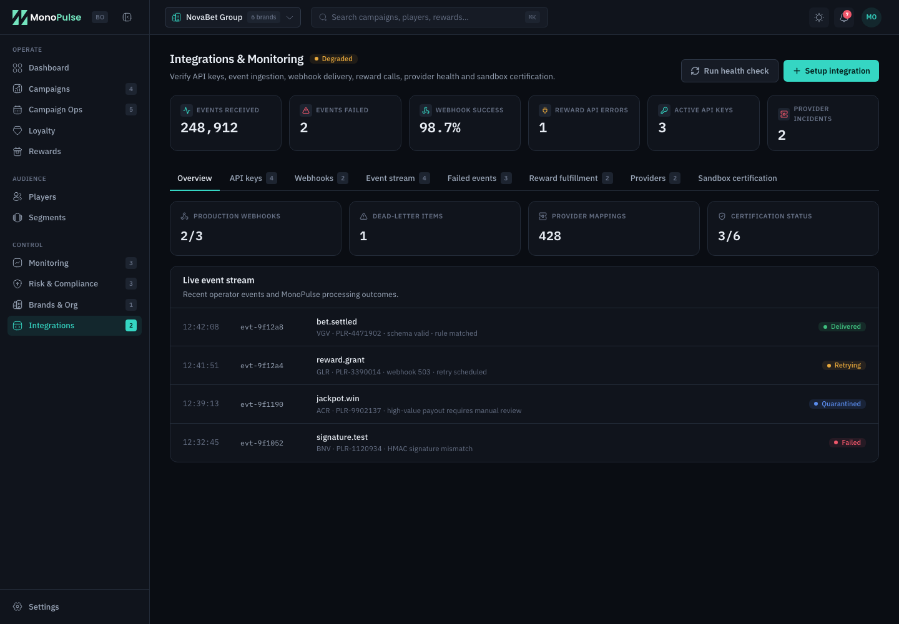
Integrations show whether MonoPulse is connected, trusted and healthy across APIs, webhooks, providers and certification checks.
Questions
- Which integrations are visible to non-technical users?
- Who can rotate API keys?
- What happens when a provider is degraded?
15. Integration Setup
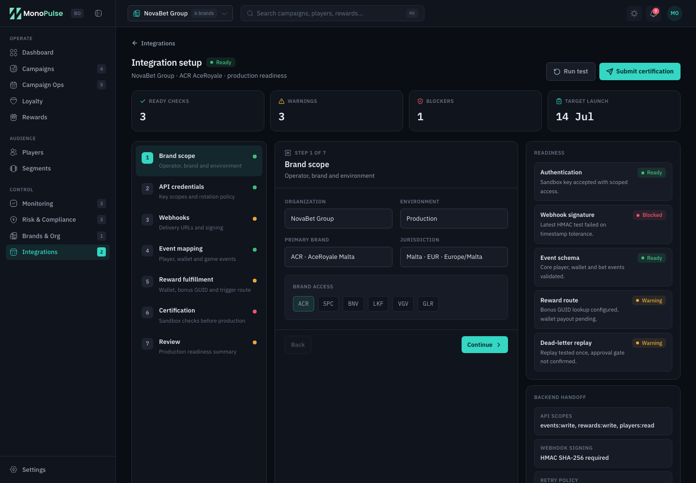
The setup wizard turns backend integration into an operator-visible workflow: brand scope, credentials, webhooks, event mapping, reward routing, certification and launch readiness.
Questions
- Which certification checks block production?
- Which event mappings are required for each campaign type?
- Who owns failed webhook replay and reward-route signoff?
16. Brands, Org And Permissions
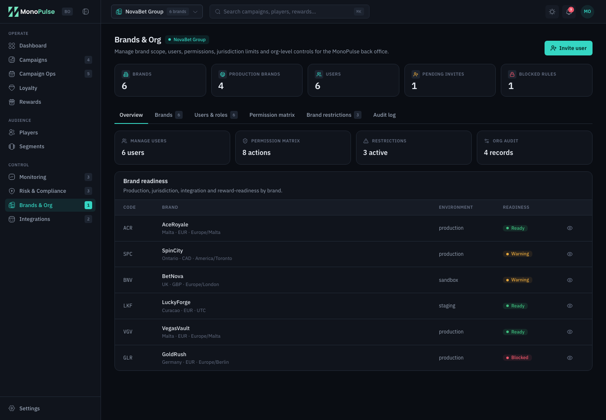
The product owner confirmed org-level visibility with brand-level campaign restriction. This screen turns that into governance.
Questions
- Is brand access inherited or assigned independently?
- Can a campaign target multiple brands?
- Which permission changes require approval?
17. Settings
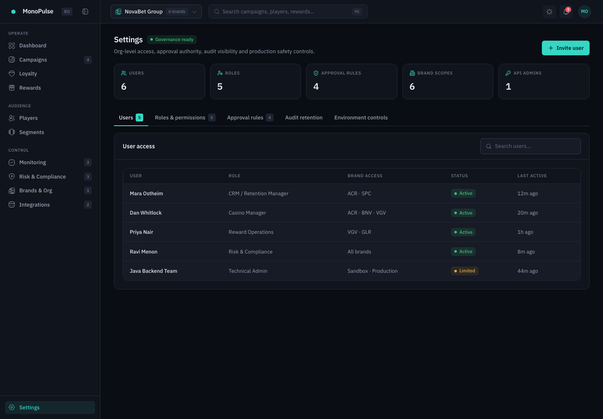
Settings should be about defaults, approval rules, notification preferences and governance, not a dumping ground.
Questions
- Which defaults are org-level versus brand-level?
- Which are preferences versus compliance rules?
- Who can change approval thresholds?
18. Global Command Palette
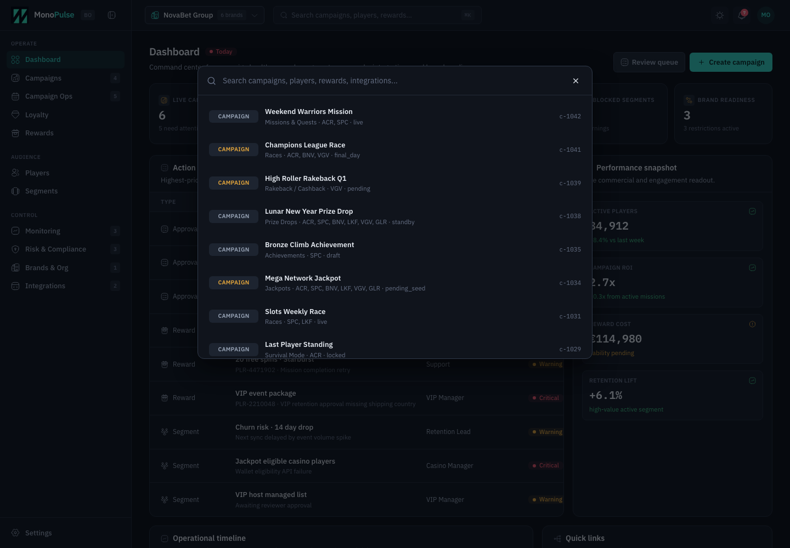
Operators move quickly between campaigns, players, rewards, approvals and incidents. Search is the speed layer.
Questions
- Which objects should be searchable?
- Should search include external platform IDs?
- How should restricted results appear?
19. Action Modal Pattern
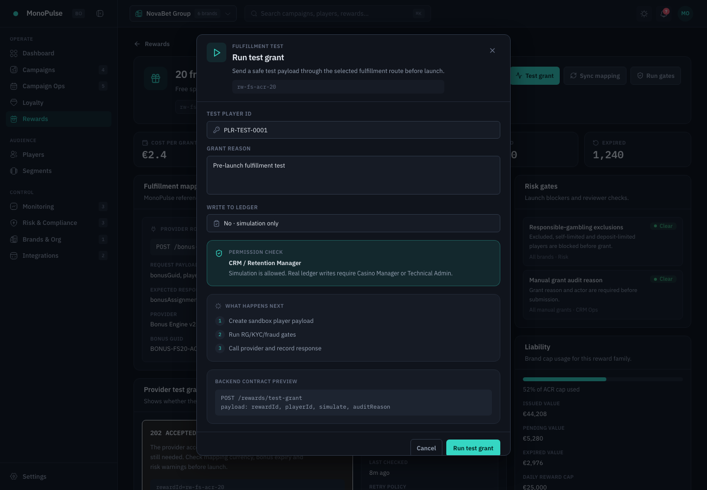
High-risk actions need one consistent pattern: permission check, form inputs, consequence preview, backend contract and audit state.
Questions
- Which actions need confirmation versus approval?
- Which payload fields are mandatory?
- What should users see when an action fails?